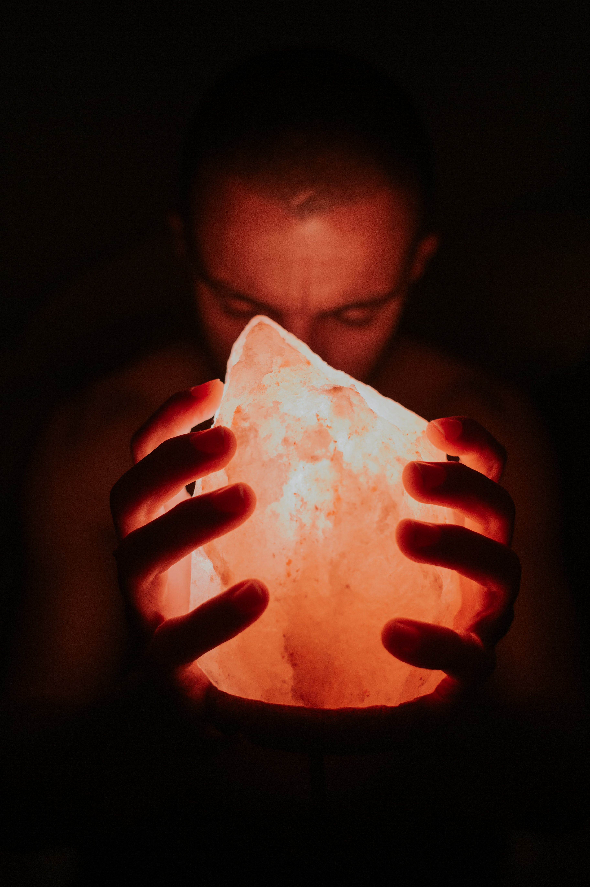

Para saber cuando debes limpiar tus cristales fíjate en su brillo, si los notas algo opacos o apagados es porque es necesaria una limpieza, también si no sientes comodidad al utilizarlos es momento de limpiar tu cristal; a la medida que te familiarizas con tu cuarzo, sabrás más fácilmente el momento correcto para realizar la limpieza. Siempre siempre confía en tu intuición.
Cargar y limpiar son dos tipos de cosas diferentes, limpiar consiste en retirar la energía acumulada por las gemas y cargar significa impregnarlos de nuestra energía para programar y manifestar deseos del corazón.

Para limpiarlos:
Con agua - No todos nuestros minerales pueden tener contacto con el agua. Investiga bien si esto se puede hacer. Si verificas si es posible, puedes utilizar agua que fluye de un manantial o arroyo, pero si no te es posible, puedes hacerlo con el agua del grifo de tu hogar, permite que el agua le caiga por un momento e imagina como se va limpiando de toda energía indeseada, luego déjalo secar al aire libre.
Es importante no usar agua caliente ya que puede provocar que las piedras se agrieten.
El agua lluvia es un método fantástico para limpiar tus cristales, para hacerlo recoge el agua de lluvia especialmente de zonas rurales (en ciudad puede caer lluvia acida) y sumerge tus cristales en ella por unas horas, también la puedes dejar bajo la lluvia en tu jardín mientras llueve.
Con humo de salvia blanca o de palo santo - Para realizar la limpieza con el elemento aire, solo basta con pasar el humo sanador varias veces alrededor de tu cuarzo. También el cedro o el sándalo son maravillosos limpiadores. Puedes acompañarlo con el mantra de tu elección.
Con visualización - Este método de limpieza consiste en hacer una meditación y ritual. Puedes encender una velita y después tomar el cristal con ambas manos, mirarlo y respirar profundamente. Esta es una hermosa manera de limpiar tu cristal, a su vez, también podemos cargarlo poniéndole nuestras intenciones apenas lo estamos sosteniendo con nuestra mano.
Para cargarlos:
Con la Luna Llena - basta con dejar tu cristal a la luz de la luna durante la noche de Luna Llena, ya que está tiene una energía suave e increíble que programará inmediatamente nuestro cristal, en el caso de nuestra AQUA SAGRADA puedes dejar la botella con agua o el cristal solo. (Si dejas la botella con agua, puedes eliminar el de luna al día siguiente). Por ultimo retira tu cristal antes de que salga el sol.
Con la luz del sol - Este método consiste en la exposición de tu cuarzo a la luz del sol, algunos cristales como la amatista o el cuarzo rosa u otros con bastante energía femenina no se deben dejar a exposición directa del sol. Los cristales como el citrino que tiene energía masculina son ideales para cargarlos con este método. Es recomendable evitar la exposición directa del sol, colócalas en una zona donde los rayos del sol de lleguen de manera indirecta o sutil dado que el color se puede ver afectado en algunas ocasiones por la magnitud de las ondas solares.
Con música 432 Hz - Con este método podemos recargar tu gema gracias a las frecuencias musicales que, resuenan sobre el cristal. Además tendrá grandes beneficios en tu interior.